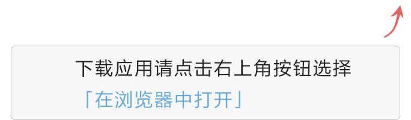

<!DOCTYPE HTML>
<html>
	<head>
		<meta charset="UTF-8" />
		<meta name="viewport" content="width=device-width,  initial-scale=1.0, user-scalable=0, minimum-scale=1.0,  maximum-scale=1.0"/>  
		<title>嫩江同城APP下载</title>
     	<script type="text/javascript">
     	    function skip() {
     	        var ua = navigator.userAgent.toLowerCase();
     	        if (ua.match(/MicroMessenger/i) == "micromessenger") {
     	            document.write("");
                    return true;
     	        } else if (browser.versions.ios || browser.versions.iPhone || browser.versions.iPad) {
     	            window.location.href = "itms-apps://itunes.apple.com/WebObjects/MZStore.woa/wa/viewSoftware?id=1169405485";
     	            return false;
     	        }
     	        else {
     	            window.location.href = "http://114.55.253.28:8090/upload/app/app.apk";
     	            return false;
     	        }
     	    }

     	    var browser = {
     	        versions: function () {
     	            var u = navigator.userAgent, app = navigator.appVersion;
     	            return {         //移动终端浏览器版本信息
     	                trident: u.indexOf('Trident') > -1, //IE内核
     	                presto: u.indexOf('Presto') > -1, //opera内核
     	                webKit: u.indexOf('AppleWebKit') > -1, //苹果、谷歌内核
     	                gecko: u.indexOf('Gecko') > -1 && u.indexOf('KHTML') == -1, //火狐内核
     	                mobile: !!u.match(/AppleWebKit.*Mobile.*/), //是否为移动终端
     	                ios: !!u.match(/\(i[^;]+;( U;)? CPU.+Mac OS X/), //ios终端
     	                android: u.indexOf('Android') > -1 || u.indexOf('Linux') > -1, //android终端或uc浏览器
     	                iPhone: u.indexOf('iPhone') > -1, //是否为iPhone或者QQHD浏览器
     	                iPad: u.indexOf('iPad') > -1, //是否iPad
     	                webApp: u.indexOf('Safari') == -1 //是否web应该程序，没有头部与底部
     	            };
     	        } (),
     	        language: (navigator.browserLanguage || navigator.language).toLowerCase()
     	    }

     	    //document.writeln("语言版本: "+browser.language);
     	    //document.writeln(" 是否为移动终端: "+browser.versions.mobile);
     	    //document.writeln(" ios终端: "+browser.versions.ios);
     	    //document.writeln(" android终端: "+browser.versions.android);
     	    //document.writeln(" 是否为iPhone: "+browser.versions.iPhone);
     	    //document.writeln(" 是否iPad: "+browser.versions.iPad);
     	    //document.writeln(navigator.userAgent);
         </script>
	</head>
	<body onload="skip()"  style="background-color:#f5f4f4;">
	
	</body>
</html>
